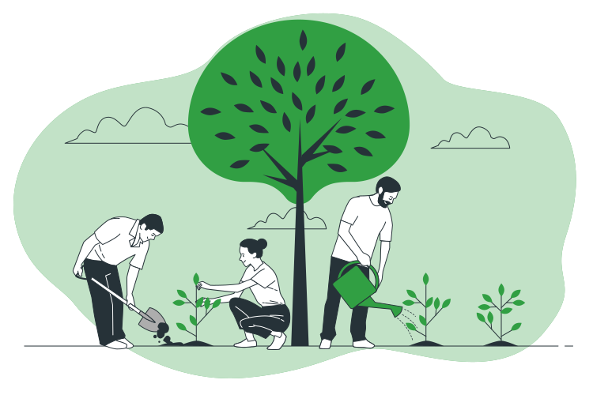

Construyendo un campus verde y sostenible en ITSON Nainari
Estamos comprometidos con la promoción de una cultura ambientalmente consciente y sostenible en nuestras instalaciones. Al mejorar nuestro entorno, no solo beneficiamos la salud y el bienestar de nuestra comunidad, sino que también contribuimos positivamente al ecosistema local.
En nuestra plataforma, encuentra información sobre espacios abiertos, verdes y cómodos para estudiantes y personal. Únete a nosotros para crear un ambiente propicio para aprender, relajarse e interactuar
